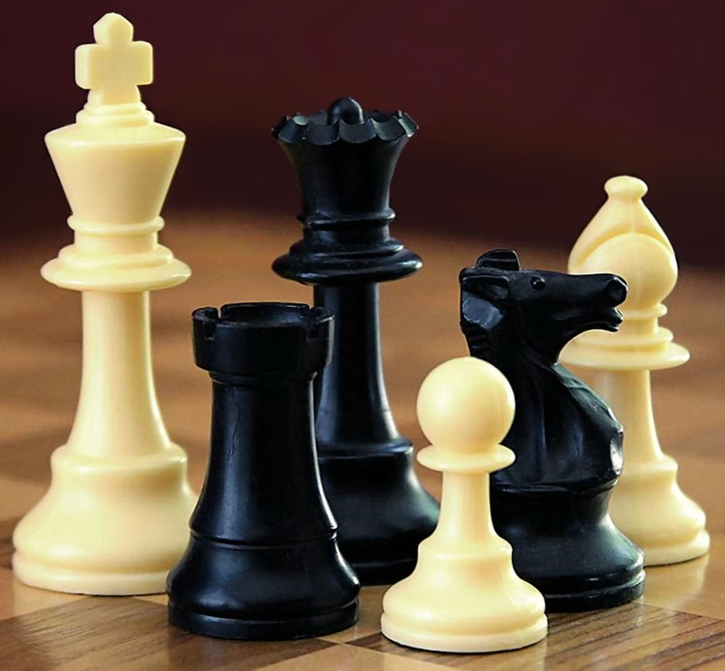
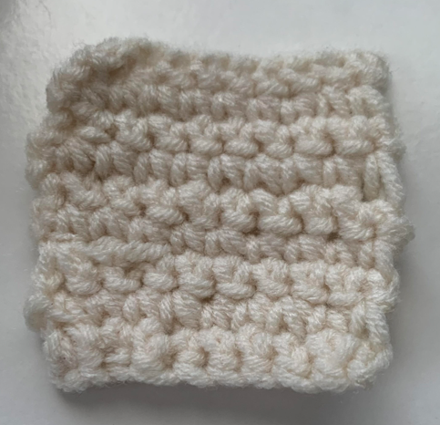
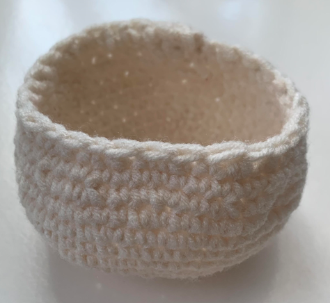
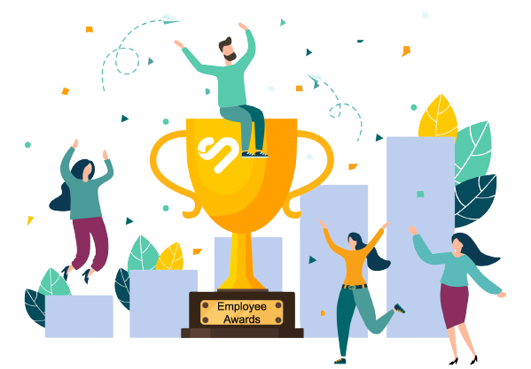
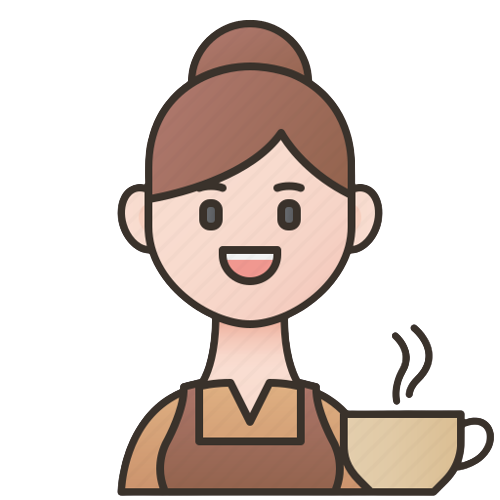
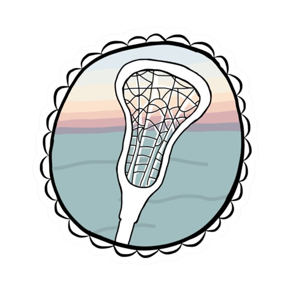
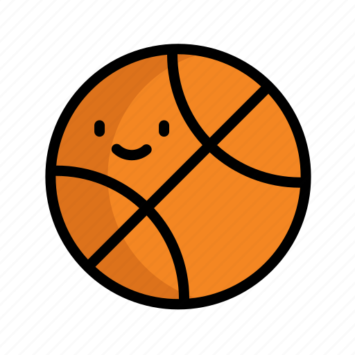

Education
This year throughout my academic journey, I had the privilege of being part of chess club and media club. I further sharpened my critical thinking and teamwork abilities. Overall, my education has provided me with a solid academic background and a passion for continuous learning.
Projects
I've been doing crotchet for a while and here are some of my current projects:
Skills
Technical skills that I possess:
- Project management
- Data analysis
Soft skills that I possess:
- Communication
- Leadership
- Problem solving
- Organisation
- Teamwork
- Active listening
- Time management



Awards and Honours
Awards for 2022 in school:
Academic Excellence - Learning Area Excellence - Year 9 English
Academic Excellence - Learning Area Excellence - Year 9 Mathematics
Academic Excellence - Learning Area Excellence - Year 9 Social Studies
Academic Excellence - Learning Area Excellence - Year 9 Technology
Diligence Award-Year 9 Food Technology
Diligence Award-Year 9 Health Education
Diligence Award-Year 9 Music
Special Award Nominee-Year 9 Service Cup
Whanau Distinction Awards-John Britten Whanau 2022

Cocurriculars
Cocurriculars I joined this year in school:
- Cafe assistant
- Lacrosse
- Intinant music lessons
- Chess Club
- Orchestra
- Wearable Arts
- Enviroschools
- Blake carwash
- Media club
- Uniform review group
Competitions
Competitions I joined this year:
- Web.comp
- Uniform review group
- Great Kiwi English Competition
- Junior Maths Competition
- CAT Computational and Algorithmic Thinking Competition
- Chess tournament


Experience
I joined a lot of cocurriculars and competitions at school and I play a musical instrument, done a few volunteer work and played some sports out of school. I'm currently learning violin in school and I'm self-learning piano at the moment. I achieved ABRSM grade 8 piano and migrated to New Zealand two years ago. After that, I started playing songs that I like rather than continuing taking piano exams. I also sold flags, joined the Volunteer Space (spending a few weeks with a group of teenagers preparing, learning, helping out and at last visiting elderly people in Hong Kong) and Letter to Stranger (hand writing and delivering an empathetic and heart-warming letter to a stranger). I also have weekly basketball and table tennis training during the weekends. I enjoy playing sports with my friends and my family. Joining these activities have made my out of school life more fulfilling. In the future, I plan to participate in more volunteer work.
